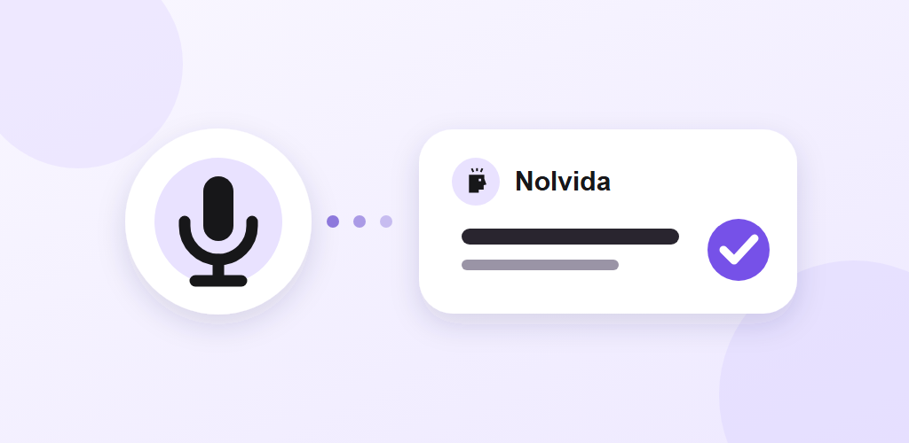
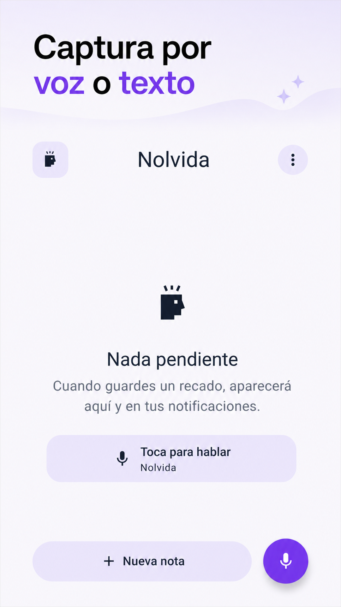
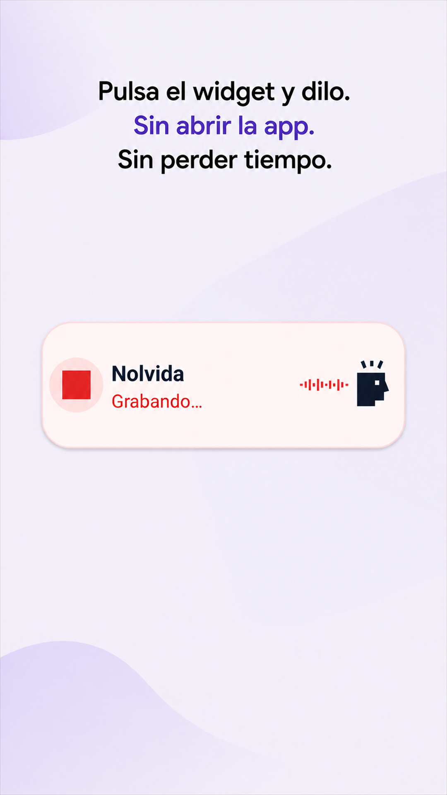
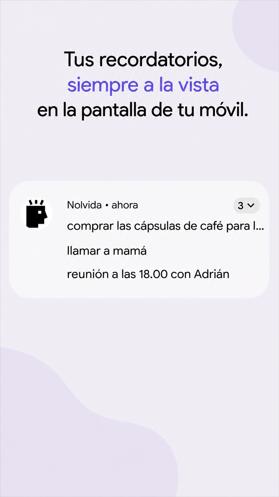
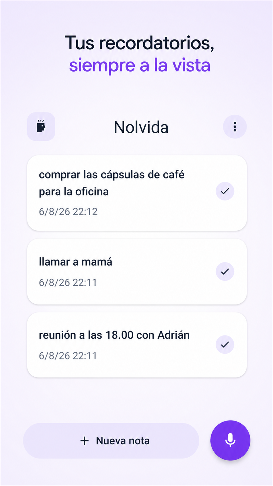

Captura inmediata
Voz desde el widget o texto desde una única pantalla.
Caso técnico · Android nativo
Versión 1.0 · Agosto 2026
Capturar un recordatorio antes de que se te olvide.
Una aplicación Android local-first que convierte voz o texto en recordatorios visibles, privados y accionables, con la mínima fricción posible.

01 · El producto
Muchas ideas pequeñas se pierden en el tiempo que tardamos en desbloquear el móvil, abrir una app, elegir una lista y completar un formulario. Nolvida reduce ese recorrido a una acción: decir o escribir lo importante.
Voz desde el widget o texto desde una única pantalla.
Cada recordatorio permanece en notificaciones hasta completarlo.
Sin cuentas, nube, anuncios, analítica ni permiso de Internet.

02 · Experiencia
Hablar o escribir
Revisar el texto
Room + notificación
Eliminar o deshacer

Desde la aplicación
Los resultados parciales informan el estado, pero nunca se guardan. El usuario revisa el texto final y decide cuándo crear el recordatorio.
Desde el widget
Una pulsación inicia un servicio visible de micrófono. El resultado final se guarda localmente y publica su notificación; la sesión se cierra en un máximo de 60 segundos.
03 · Arquitectura
La aplicación, el widget y las acciones de notificación convergen en el mismo orquestador. Room es la fuente de verdad; la notificación es una proyección visible de ese estado, no un segundo almacén de datos.
Serializa las mutaciones con Mutex y mantiene el orden correcto
entre persistencia, publicación y cancelación.
Un contenedor pequeño evita añadir un framework para un grafo de dependencias acotado.
El ViewModel expone StateFlow y conserva lógica testeable sin dependencias visuales.
SpeechRecognizer, NotificationManager y App Widget reducen capas innecesarias.
04 · Consistencia
El reto no era solo crear recordatorios: era impedir que base de datos y notificaciones divergiesen ante concurrencia, reinicios o procesos interrumpidos.
Validar y guardar en Room antes de publicar.
Eliminar en una transacción y cancelar su notificación.
Restaurar exactamente la fila y volver a publicarla.
Reponer las ausentes y cancelar las huérfanas.

Evita carreras entre completar, restaurar y reconciliar.
Cancelar una huérfana o cerrar una sesión repetida es seguro.
WorkManager repara el estado tras reinicio y periódicamente.
05 · Voz y Android

Nolvida usa SpeechRecognizer en el dispositivo y solicita el micrófono
justo cuando se necesita. No existe un fallback a servicios en la nube y el audio
nunca se almacena.
Máquina de estados de voz
Un ID de sesión descarta resultados pertenecientes a escuchas ya canceladas.
El widget eleva el servicio antes de usar el micrófono y muestra actividad visible.
Micrófono, reconocedor, timeout y notificación temporal se liberan de forma idempotente.
Audio y notificaciones se solicitan solo cuando la acción del usuario los requiere.
06 · Privacidad
La promesa de producto se puede auditar en el manifiesto y en el flujo de datos: Nolvida no declara permiso de Internet y no necesita un backend para funcionar.
No hay registro, identidad de usuario ni sincronización externa.
El permiso no aparece en el manifiesto de la aplicación.
El buffer no se persiste; solo se utiliza la transcripción local.
No incluye publicidad, analítica, SDKs de tracking ni telemetría.
Flujo de datos
07 · Calidad
Dominio y concurrencia
Integración Android
Interfaz y accesibilidad
Matriz verificada
La validación documentada cubre el mínimo soportado, la API objetivo y un Vivo V2130 con Android 14, incluyendo instalación firmada y comportamiento del widget.
Métricas obtenidas del código y de la documentación de validación de la versión 1.0.
08 · Resultado
Nolvida llega a su release 1.0 con un alcance deliberadamente compacto y una base preparada para comportarse bien en el entorno real de Android: permisos, procesos, reinicios, concurrencia, accesibilidad y diferentes versiones del sistema.
Widget de voz, entrada manual directa y una única pantalla principal.
Persistencia local, reconciliación y acciones recuperables.
Sin permiso de Internet, cuentas, backend ni audio almacenado.
Principal aprendizaje
La simplicidad visible exige resolver muy bien la complejidad invisible.
Una interacción de pocos segundos depende de estados explícitos, persistencia consistente y un tratamiento cuidadoso del ciclo de vida de Android.
Caso elaborado mediante análisis directo del repositorio y la documentación de la versión 1.0. Estado del proyecto: release cerrada, pendiente de publicación en Google Play.